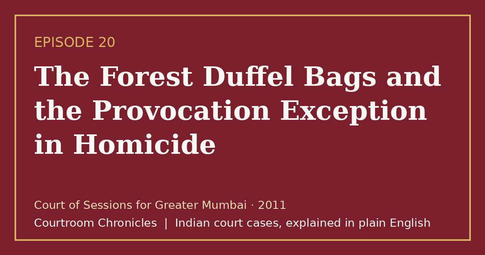

Episode 20 · 2026-10-20
The Forest Duffel Bags and the Provocation Exception in Homicide
When a television executive is slain in a residential flat and dismembered, the trial court navigates grave provocation exceptions and evidence disposal laws.

Listen
- Court
- Court of Sessions for Greater Mumbai
- Year
- 2011
- Legal Question
- Whether an unexpected confrontation in an apartment qualifies as grave and sudden provocation under Exception 1 to Section 300 IPC
- Key Forensic Evidence
- FSL STR-DNA profiling of charred skeletal bone fragments from forest scrub and luminol vehicle blood detection
Key takeaways
- The legal distinction between murder and culpable homicide hinges strictly on premeditation and the absence of sudden provocation.
- Co-accused assisting solely in post-homicide concealment cannot be convicted of murder without proof of prior conspiratorial agreement.
- Forensic STR-DNA profiling provides indisputable scientific proof of identity even from burnt or fragmented skeletal remnants.
- Under Section 428 CrPC, time spent in pre-trial detention must be set off against the final sentence of imprisonment.
The case in brief
In May 2008, a young television production executive vanished after visiting an aspiring actress's newly leased apartment in suburban Mumbai. Over the following two weeks, missing person inquiries unraveled an escalating domestic drama involving the resident's naval officer fiance, who had unexpectedly flown in from a distant military naval base after overhearing a male voice during a late-night telephone call. Upon entering the apartment early the next morning, the military officer confronted the visitor in an altercation that ended in fatal stab wounds.
Following the death, the occupants purchased commercial duffel bags, a kitchen chopper, and sanitizing agents to conceal the homicide. The deceased's body was dismembered in the domestic bathroom, transported into remote rural scrubland in a borrowed hatchback vehicle, and incinerated using fuel. Nearly two weeks later, custodial disclosures made to crime branch investigators led search parties to the secluded forest, where detectives recovered charred bone fragments, skull remnants, and a dental specimen.
Forensic biologists extracted STR-DNA profiles from the exhumed bone fragments and confirmed a conclusive biological match against reference blood samples from the victim's parents. Luminol spraying inside the borrowed vehicle further uncovered latent human blood matching the victim's blood group beneath the seat covers. The prosecution charged both individuals with murder and criminal conspiracy, alleging a premeditated plot to lure and eliminate the media executive.
The sessions court acquitted both accused of murder under Section 302 and criminal conspiracy under Section 120B, holding that the victim had initiated the visit and that the military officer had arrived weaponless, acting in a sudden transport of passion. The officer was convicted of culpable homicide not amounting to murder under Exception 1 to Section 300 and sentenced to ten years of rigorous imprisonment, while his fiance was convicted solely of causing disappearance of evidence under Section 201. The decision highlighted the precise doctrinal boundaries separating premeditated murder from sudden loss of self-control.
Timeline
- The Apartment Visit
A television executive visits an actress acquaintance to assist with domestic shifting and stays overnight.
- The Fatal Confrontation
An arriving naval officer confronts the visitor, resulting in fatal stabbing and subsequent body disposal.
- Custodial Forest Recovery
Investigating officers recover incinerated skeletal remains in rural scrubland based on custodial disclosures.
- Sessions Court Verdict
The trial court convicts the officer of culpable homicide and acquits both of premeditated murder and conspiracy.
What the court decided
The Court of Sessions for Greater Mumbai acquitted both accused of murder and conspiracy, convicting the primary assailant of culpable homicide not amounting to murder under Section 304 Part I and convicting the co-accused solely under Section 201 IPC.
Key holdings
- Criminal conspiracy under Section 120B requires antecedent consensus of minds, which cannot stand when the encounter was initiated spontaneously by the deceased.
- Grave and sudden provocation under Exception 1 to Section 300 applies when an accused suddenly discovers an unexpected person in intimate domestic surroundings without prior premeditation.
- Using a domestic knife already present on the premises without bringing an external weapon supports the absence of premeditated intent to murder.
- Dismemberment and incineration of a corpse to avoid detection constitutes the distinct offence of causing disappearance of evidence under Section 201.
Legal principles
Doctrine of Grave and Sudden Provocation
Culpable homicide is not murder if the offender is deprived of the power of self-control by grave and sudden provocation not sought or voluntarily provoked.
In this case: The unexpected confrontation inside the apartment deprived the arriving fiance of self-control, mitigating the offence from murder to culpable homicide.
Requirement of Antecedent Agreement in Conspiracy
A charge of criminal conspiracy requires concrete proof of prior agreement to commit an unlawful act, not mere post-offence coordination.
In this case: Because the victim visited voluntarily without solicitation, the court dismissed the theory of a pre-planned conspiracy to murder.
Corpus Delicti by STR-DNA Profiling
When human remains are charred or dismembered, matching genetic STR markers from bones to parents conclusively proves corpus delicti.
In this case: DNA extracted from forest bone fragments matched the victim's parents with statistical certainty exceeding ninety-nine percent.
The law then and now
The events occurred in May 2008, and the trial and appeals were conducted under the Indian Penal Code, 1860, the Code of Criminal Procedure, 1973, and the Indian Evidence Act, 1872. The new criminal codes (Bharatiya Nyaya Sanhita, Bharatiya Nagarik Suraksha Sanhita, and Bharatiya Sakshya Adhiniyam) took effect on 1 July 2024 and apply prospectively.
Left: the law applied to this case. Right: the matching provision today (the new criminal codes apply only to offences on or after 1 July 2024).
Preserved definition of murder and five statutory exceptions under Section 101. See all 2 episodes on this provision →
Re-enacted under Section 105 with structured sentencing brackets for culpable homicide. See all 2 episodes on this provision →
- Indian Penal Code, 1860Section 201Causing disappearance of evidence of offence, or giving false information to screen offenderBharatiya Nyaya Sanhita, 2023Section 238Causing disappearance of evidence of offence, or giving false information to screen offender
Substantially unchanged; punishes destruction of evidence to shield offenders. See all 6 episodes on this provision →
- Code of Criminal Procedure, 1973Section 428Period of detention undergone by the accused to be set off against the sentence of imprisonmentBharatiya Nagarik Suraksha Sanhita, 2023Section 468Period of detention undergone by accused to be set off against sentence of imprisonment
Preserved statutory credit for undertrial custody period against final imprisonment terms.
Sources
- Judgment of the High Court of Judicature at Bombay, 2008
- Appellate Order of the High Court of Judicature at Bombay, 2022
- Indian Penal Code, 1860 (High Court of Tripura Official Text)
- Code of Criminal Procedure, 1973 (Official Government Text)
- Bharatiya Nyaya Sanhita, 2023 and IPC Comparative Table (UP Police)
- Bharatiya Nagarik Suraksha Sanhita, 2023 and CrPC Comparative Table (UP Police)
- Bharatiya Sakshya Adhiniyam, 2023 (High Court of Tripura Official Text)